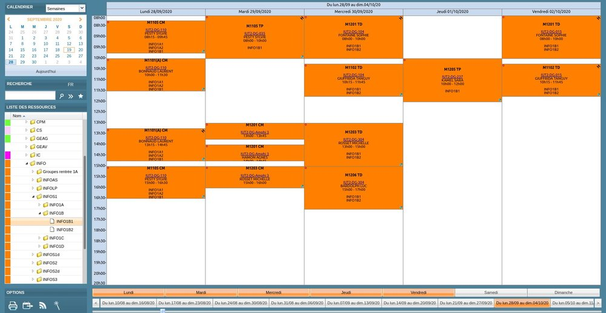
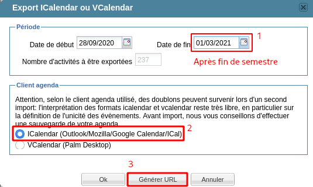
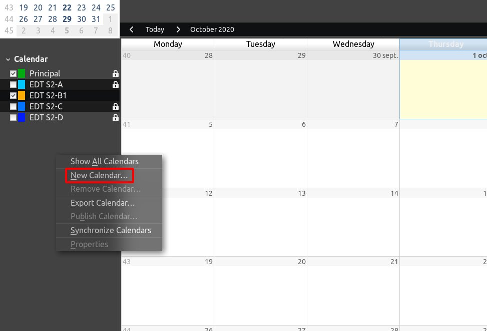
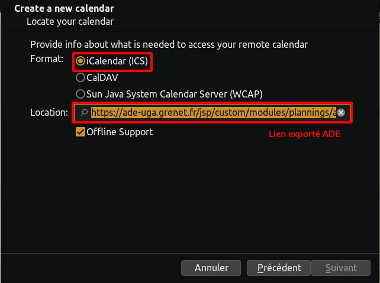

Pour passer d'ADE à un magnifique agenda synchronisé natif, il y a 2 étapes à connaître : récupérer le lien iCal (et il faut le chercher pour le trouver), puis le donner à manger correctement à votre application agenda habituelle (et pour certaines c'est pas évident).
Mais vous verrez, ça se fait.
Obtenir le lien iCal
Commencez par aller consulter ADE (si vous ne connaissez pas encore, on vous explique ici)
Sélectionnez votre emploi du temps, puis cliquez sur l'icône Export Agenda en bas à gauche.


Dans la fenêtre d'export, choisissez l'intervalle de temps couverte : vous pouvez laisser de la marge, de toute façon un EdT ne dure jamais plus d'un semestre.
Sélectionnez ICalendar (Outlook/Mozilla/Google Calendar/ICal), puis cliquez sur Générer URL (attention, le "Ok" mène simplement vers un téléchargement du fichier .ics, qui ne sera pas dynamique !).

Et voilà, vous avez votre lien ! Vous pouvez le garder dans un fichier texte le temps de voir comment l'entrer dans votre logiciel/appli agenda préféré-e juste après.
Configurer l'application agenda
/!\ Article en cours de rédaction (eh oui, mine de rien ça prend du temps de chercher et faire les screenshots...)
Dans l'onglet Calendrier cliquez droit sur la liste des agendas à gauche et choisissez New Calendar.

Choisissez On the Network, puis iCalendar (ICS), et collez le lien d'ADE dans Location.

Donnez-lui le titre et la couleur que vous voulez. L'email est inutile pour un agenda en lecture seule, et il est conseillé de décocher Show Reminders (sauf si vous voulez recevoir une notification à chaque cours...)

Et c'est bon ! (normalement)
Vous pouvez masquer l'agenda en cochant sa case dans la liste de gauche.
Applications Android diverses